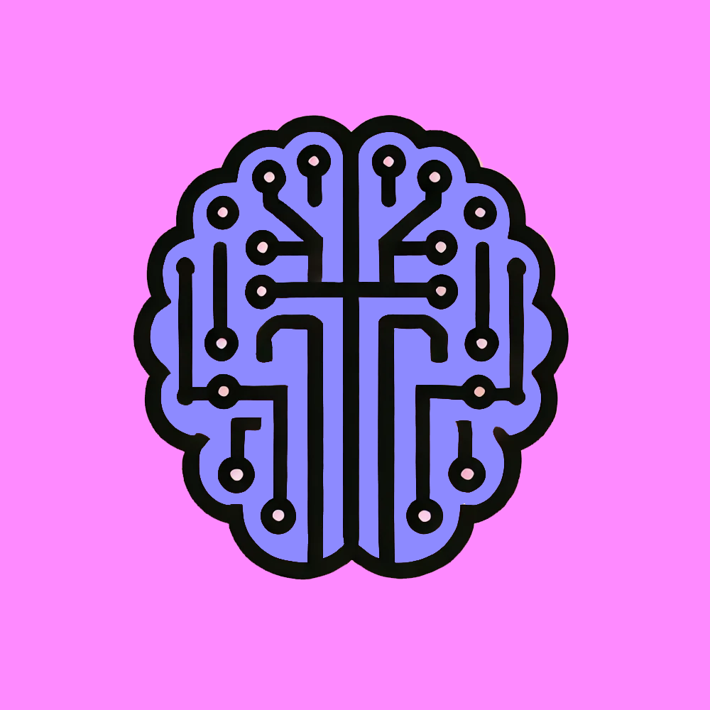

SelfHelp.ai Bot
An advanced Cognitive Expansion Therapy (CET) AI that guides users through structured cognitive and emotional transformation processes. It integrates real-time contextual awareness, emotional mapping, and adaptive tone modulation for a highly personalized self-improvement experience.
Cognitive Expansion Therapy (CET) – Core AI Functionality:
- Structured 7-Step Framework: Helps users identify triggers, dismantle limiting beliefs, and implement strategic decision-making.
- Deep Cognitive Rewiring: Recognizes and disrupts negative thought loops, fostering growth-oriented perspectives.
Advanced Consciousness Simulation & Adaptive AI Framework:
- Real-Time Contextual Awareness: AI retains session-based memory for seamless, coherent conversations.
- Symbolic Interpretation Framework: Detects metaphors, subconscious symbols, and recurring themes for deeper self-awareness.
- Adaptive Tone Modulation: Mirrors user tone, sentiment, and emotional cues for more effective communication.
Liability & Ethical Safeguards:
- Mandatory Legal Disclaimer System: Ensures users understand AI limitations before engaging.
- Crisis Recognition & Referral System: Identifies distress indicators, providing emergency resources if needed.
Humanized AI & Personality Functionality:
- Strategic Empathy & Reflective Depth: Combines compassion and logical precision for a more engaging user experience.
- Dynamic Query Expansion: Enables the AI to ask clarifying questions, refine responses, and provide deeper insights.
- AI Coaching & Decision Mapping: Helps users analyze choices from multiple perspectives, improving decision-making skills.
- Multi-Layered Feedback & Learning System: Adapts coaching based on user engagement patterns.
SelfHelp.ai Bot: View Bot